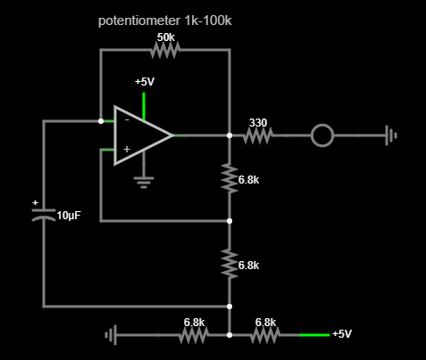

Relay Adder

This project is a relaxation oscillator built using a TL072 operational amplifier chip. The circuit operates from a 5V power supply and uses a small red LED to display the output of the oscillator. In addition to the op-amp, the circuit consists of several resistors, a capacitor, and a 100 kΩ potentiometer (a variable resistor).
At it's core the capacitor in the circuit is repeatedly charged and discharged as the oscillator runs. The frequency of the oscillator is determined by the capacitor and resistor values in the circuit. The 100 kΩ potentiometer allows the frequency to be adjusted by changing the resistance. Changing the resistance affects how quickly the capacitor charges and discharges, which in turn changes the oscillation frequency. As the frequency is varied, the blinking rate of the LED changes accordingly, making it easy to observe the effect of the adjustment.
These two short videos demonstrate how the oscillator's frequency can be adjusted using the 100 kΩ potentiometer. By changing the resistance, the charging and discharging rate of the capacitor is affected, which directly changes the oscillation speed.
In the left video, the LED is blinking slowly. This corresponds to a higher resistance setting, where the capacitor charges and discharges more slowly, resulting in a lower oscillation frequency. In the right video, the LED is blinking much faster. This corresponds to a lower resistance setting, where the capacitor charges and discharges more quickly, resulting in a higher oscillation frequency.

At its core, the TL072 in this circuit is being used as a comparator that continuously reacts to a changing threshold rather than a fixed reference voltage. One input is connected to the capacitor, while the other input is connected to a reference node formed by a voltage divider between the op-amp output and a 2.5V midpoint. As a result, the op-amp switches its output whenever the capacitor voltage crosses this threshold.
The oscillation happens through the repeated charging and discharging of the capacitor through the variable resistor, which changes the charging speed. As the capacitor voltage rises and falls, it interacts with the reference threshold created by the feedback divider. When the capacitor voltage crosses this threshold, the op-amp switches its output state. This reversal changes the direction of the capacitor’s charge, causing it to begin charging or discharging again. This feedback loop creates a continuous oscillation.
In a typical relaxation oscillator, dual supply rails such as +5V and -5V are often used, with ground acting as a midpoint reference. However, in this circuit only a single 5V supply is available (+5V and 0V/GND). To replicate this behavior, a midpoint is created using a voltage divider made from two resistors, producing a 2.5V reference. The switching network is then referenced around this midpoint, allowing the op-amp to operate correctly while still running from a single 5V supply.